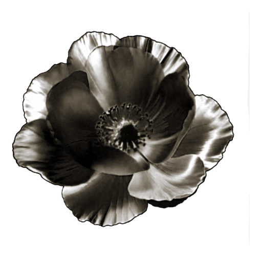
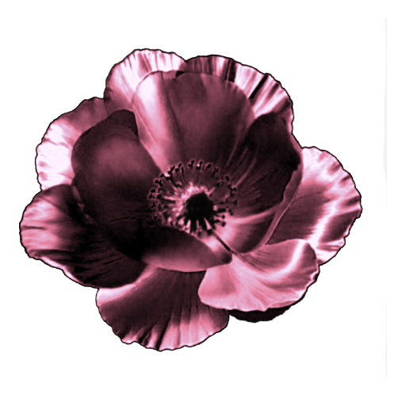

<!doctype html><html lang="zh-CN"><meta charset="utf-8"><meta name="viewport" content="width=device-width, initial-scale=1"><title>银花图标 · 实际渲染提取</title><style>*{box-sizing:border-box}body{margin:0;background:#090a0c;color:#e8eaed;font-family:-apple-system,BlinkMacSystemFont,"PingFang SC",sans-serif}.sheet{max-width:1040px;margin:auto;padding:32px 48px}.top{display:flex;justify-content:space-between;align-items:center}.meta{color:#7f8892;font-size:11px;letter-spacing:.12em}h1{font-size:24px;font-weight:450;margin:10px 0}a{font-size:12px;color:#acbac8;text-decoration:none}.hero{display:flex;justify-content:center;align-items:center;gap:46px;padding:12px 0 28px}.large{width:340px;height:340px;object-fit:contain}.color-example{width:204px;height:204px;object-fit:contain}.compare{text-align:center;font-size:11px;color:#808b96}.bottom{border-top:1px solid #ffffff13;padding-top:24px;display:flex;justify-content:space-between;align-items:center;gap:32px}.label{color:#89939d;font-size:11px;margin-bottom:16px}.switch{display:flex;align-items:center;gap:16px;width:max-content;border:1px solid #ffffff28;border-radius:99px;padding:7px 13px;background:linear-gradient(155deg,#ffffff16,#ffffff04);box-shadow:inset 0 1px 1px #ffffff20}.block{width:32px;height:32px;border-radius:50%}.dark{background:#090d12;border:1px solid #5e6e7a}.white{background:#f5f5f2}.flower{width:44px;height:44px;display:grid;place-items:center;background:linear-gradient(160deg,#ffffff35,#ffffff08);border:1px solid #ffffff40;border-radius:50%}.flower img{width:40px;height:40px}.sizes{display:flex;align-items:center;gap:24px}.size{text-align:center;color:#778490;font:10px ui-monospace,monospace}.size img{display:block;margin:0 auto 8px}.light{background:#dddeda;border-radius:14px;padding:9px}.caption{font-size:11px;color:#77838f;line-height:1.9;margin-top:24px}@media(max-width:640px){.sheet{padding:25px}.hero{gap:0;flex-wrap:wrap}.large{width:290px;height:290px}.color-example{width:150px;height:150px}.bottom{align-items:flex-start;flex-direction:column;gap:24px}}</style><main class="sheet"><div class="top"><div><div class="meta">从实际动画画面提取</div><h1>银花 · 光影原貌</h1></div><a href="index.html">打开动画与调色盘 ↗</a></div><div class="hero"><div class="compare"><p>玫瑰粉 · 调色示例</p></div></div><div class="bottom"><div><div class="label">黑、白色块右侧的图标效果</div><div class="switch"><span class="block dark"></span><span class="block white"></span><span class="flower"></span></div></div><div><div class="label">小尺寸与浅色背景</div><div class="sizes"><div class="size">24</div><div class="size">32</div><div class="size">40</div><div class="light"></div></div></div></div><p class="caption">截图默认参数 · 98.4° 相位 · 透明 PNG<br>保留原动画的自然高光与褶皱，去除背景并保留暗色花心。</p></main></html>
